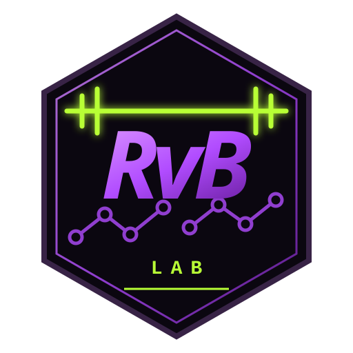

Underground Peptide Lab
Rafão Calculadora
de Peptídeos
Precisão matemática para visualizar sua diluição em seringas U-100.
ERROR://INPUT
Revise os campos
Output validado
Quanto puxar na seringa
Posição calculada
SYRINGE VISUALIZER
ESCALA 50 UI // 0,5 ML
DOSE POSITION0,00 UICAP. 50 UI
- Dose equivalente
- Concentração
- Doses completas
- Restante após doses completas
- Restante total
- Duração estimada do estoque
Estimativa teórica. Não inclui perdas por reconstituição, espaço morto ou retenção no frasco ou na seringa.